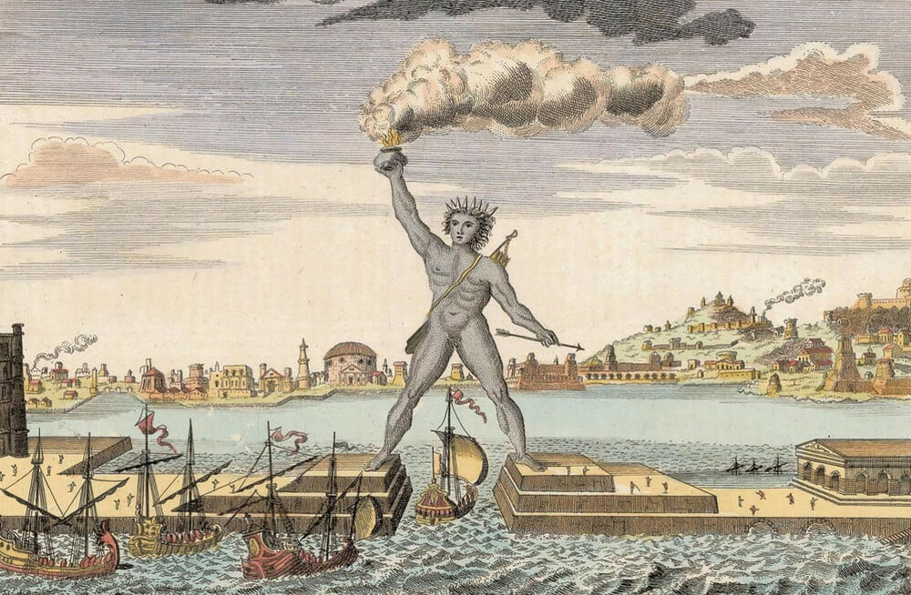
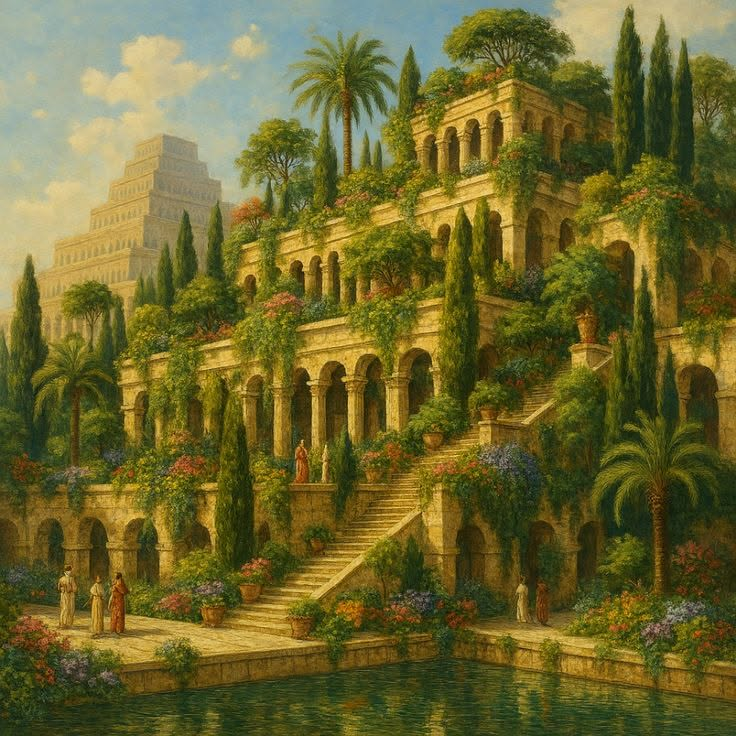
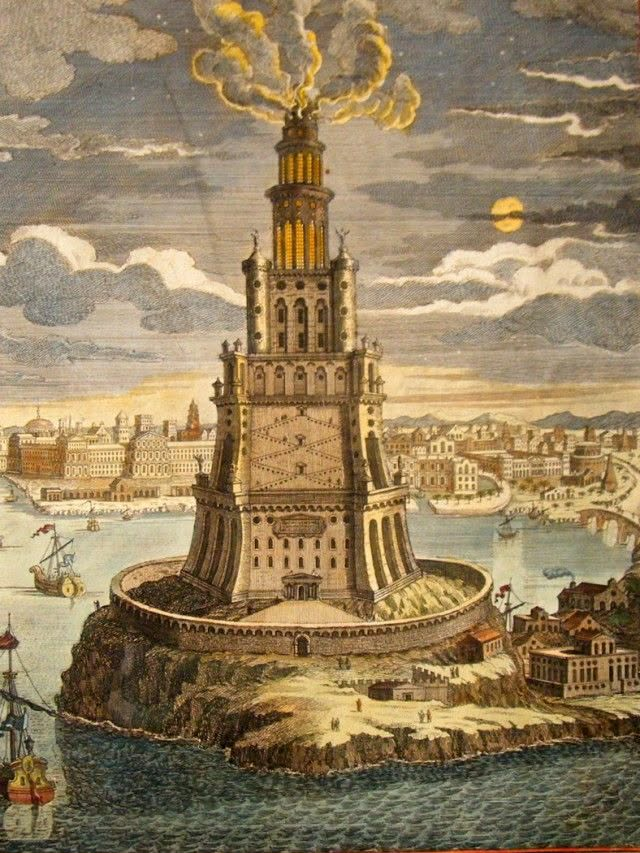
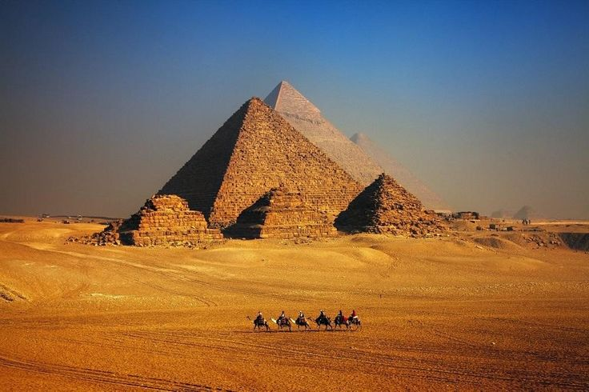
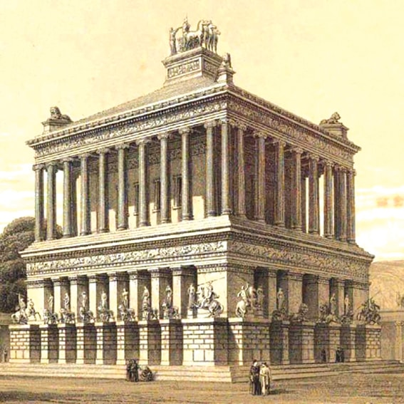
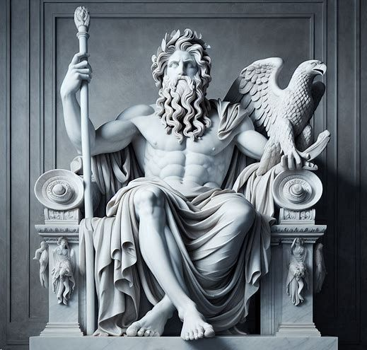
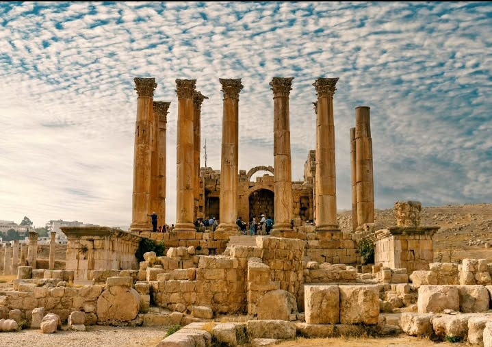

Tượng Thần Mặt Trời ở Rhodes, hay Colossus of Rhodes, là một trong Bảy kỳ quan thế giới cổ đại. Công trình khổng lồ này được xây dựng để tôn vinh thần Helios – vị thần Mặt Trời trong thần thoại Hy Lạp – và là biểu tượng cho sức mạnh, sự thịnh vượng cũng như niềm tự hào của người dân đảo Rhodes.

Tượng được xây dựng vào khoảng năm 292 TCN và hoàn thành sau hơn 12 năm thi công. Với chiều cao ước tính khoảng 33 mét, Colossus từng là bức tượng cao nhất thế giới cổ đại, được chế tác chủ yếu từ đồng và gia cố bằng khung sắt cùng đá.
Helios là vị thần đại diện cho Mặt Trời, ánh sáng và sự sống. Việc dựng tượng Helios thể hiện lòng tôn kính của người dân Rhodes và niềm tin rằng ánh sáng sẽ dẫn lối cho thành phố phát triển bền vững.
Colossus không chỉ là một công trình nghệ thuật vĩ đại mà còn đánh dấu thời kỳ hoàng kim của nền văn minh Hy Lạp cổ đại, nơi con người thể hiện khả năng sáng tạo và kỹ thuật xây dựng vượt bậc.
Dù bị phá hủy bởi động đất vào năm 226 TCN, hình ảnh Tượng Thần Mặt Trời vẫn sống mãi trong lịch sử và trở thành nguồn cảm hứng cho nghệ thuật, kiến trúc và văn hóa về sau.
Vườn Treo Babylon là một trong Bảy Kỳ Quan Thế Giới Cổ Đại, nổi tiếng với kiến trúc độc đáo gồm nhiều tầng vườn cây xanh tươi được xây dựng trên cao. Theo truyền thuyết, công trình này được vua Nebuchadnezzar II xây dựng để an ủi hoàng hậu Amytis, người nhớ quê hương núi non xanh mát.

Mặc dù chưa có bằng chứng khảo cổ xác thực về sự tồn tại của Vườn Treo Babylon, công trình này vẫn được nhắc đến rộng rãi trong các tài liệu Hy Lạp cổ đại. Hệ thống tưới tiêu phức tạp được cho là đã giúp đưa nước từ sông Euphrates lên các tầng vườn cao, thể hiện trình độ kỹ thuật vượt bậc của nền văn minh Lưỡng Hà.
Vườn được thiết kế theo dạng bậc thang chồng lên nhau, phủ đầy cây cối và hoa lá, tạo nên cảnh quan xanh mát giữa vùng đất khô hạn.
Theo mô tả cổ đại, các kỹ sư Babylon đã sử dụng cơ chế nâng nước tiên tiến để duy trì sự sống cho cây trồng ở độ cao lớn.
Cho đến nay, Vườn Treo Babylon vẫn là một bí ẩn, nằm giữa ranh giới của lịch sử và truyền thuyết, khiến các nhà nghiên cứu không ngừng tranh luận.
Hải đăng Alexandria, còn được gọi là Pharos of Alexandria, là một trong Bảy Kỳ Quan Thế Giới Cổ Đại. Công trình được xây dựng vào thế kỷ III TCN trên đảo Pharos, ngoài khơi thành phố Alexandria (Ai Cập), dưới triều đại vua Ptolemy II.

Với chiều cao ước tính từ 100 đến 130 mét, Hải đăng Alexandria từng là một trong những công trình cao nhất thế giới cổ đại. Ánh sáng từ ngọn tháp giúp tàu thuyền định hướng an toàn khi tiến vào cảng Alexandria – trung tâm thương mại và văn hóa quan trọng của Địa Trung Hải.
Hải đăng gồm ba phần chính: chân đế hình vuông, thân tháp bát giác và đỉnh tháp hình trụ, tạo nên kết cấu vững chắc và dễ nhận diện từ xa.
Ngọn lửa lớn trên đỉnh tháp, kết hợp với hệ thống gương phản chiếu, giúp ánh sáng lan xa hàng chục kilômét trên mặt biển.
Hải đăng bị hư hại nặng nề qua nhiều trận động đất từ thế kỷ X đến XIV và cuối cùng sụp đổ hoàn toàn, chỉ còn lại các ghi chép lịch sử.
Kim Tự Tháp Giza là công trình cổ đại lâu đời nhất trong Bảy Kỳ Quan Thế Giới Cổ Đại và là kỳ quan duy nhất còn tồn tại gần như nguyên vẹn cho đến ngày nay. Được xây dựng tại Ai Cập cổ đại, kim tự tháp là biểu tượng cho quyền lực, tín ngưỡng và trình độ kỹ thuật vượt bậc của nền văn minh này.

Kim tự tháp được xây dựng vào khoảng năm 2580 TCN dưới triều đại Pharaoh Khufu. Công trình gồm hàng triệu khối đá khổng lồ được xếp chồng với độ chính xác đáng kinh ngạc, thể hiện trình độ tổ chức lao động, kỹ thuật xây dựng và toán học vượt xa thời đại của nó.
Kim Tự Tháp Giza được xây dựng làm lăng mộ cho Pharaoh Khufu, phản ánh niềm tin sâu sắc của người Ai Cập vào thế giới bên kia và sự bất tử.
Kim tự tháp được xây dựng làm lăng mộ cho các Pharaoh, những người được xem là hiện thân của thần linh trên trần thế. Quy mô đồ sộ của công trình thể hiện quyền lực tuyệt đối và địa vị tối cao của nhà vua trong xã hội Ai Cập cổ đại.
Kim tự tháp phản ánh niềm tin rằng linh hồn Pharaoh sẽ tiếp tục tồn tại sau khi chết. Công trình được xem là cầu nối giữa trần thế và thế giới vĩnh hằng, nơi nhà vua tiếp tục cai trị ở kiếp sau.
Lăng mộ Mausolus là một trong Bảy Kỳ Quan Thế Giới Cổ Đại, được xây dựng để tưởng nhớ Mausolus – vị thống đốc quyền lực của vùng Caria dưới đế chế Ba Tư. Công trình nổi tiếng bởi vẻ đẹp tráng lệ và sự kết hợp hài hòa giữa nghệ thuật kiến trúc và điêu khắc cổ đại.

Lăng mộ được xây dựng vào khoảng thế kỷ IV TCN tại Halicarnassus, với chiều cao ước tính khoảng 45 mét. Công trình kết hợp nhiều phong cách kiến trúc khác nhau, từ Hy Lạp, Ai Cập đến Lưỡng Hà, tạo nên một tổng thể độc đáo và vượt trội so với các lăng mộ cùng thời.
Lăng mộ Mausolus được thiết kế với nền móng vững chắc, các cột đá bao quanh và mái kim tự tháp phía trên. Sự kết hợp này tạo nên một hình thức kiến trúc mới lạ, chưa từng xuất hiện trước
Công trình được trang trí bằng nhiều bức tượng và phù điêu do các nghệ nhân Hy Lạp hàng đầu thực hiện. Những tác phẩm này thể hiện trình độ điêu khắc tinh xảo và giá trị nghệ thuật vượt thời đại.
Tên gọi “mausoleum” về sau trở thành thuật ngữ chung để chỉ các lăng mộ trên toàn thế giới. Dù công trình không còn tồn tại nguyên vẹn, ảnh hưởng của nó vẫn kéo dài trong lịch sử kiến trúc nhân loại.
Tượng thần Zeus là một trong Bảy Kỳ Quan Thế Giới Cổ Đại, được dựng lên để tôn vinh Zeus – vị thần tối cao trong thần thoại Hy Lạp. Bức tượng đặt tại thành phố Olympia, trung tâm tôn giáo quan trọng, và trở thành biểu tượng cho quyền lực tuyệt đối cùng trật tự của vũ trụ theo quan niệm Hy Lạp cổ đại.

Tượng được xây dựng vào khoảng năm 435 TCN bởi nhà điêu khắc Phidias. Với chiều cao khoảng 12 mét, bức tượng được chế tác từ vàng và ngà voi, đặt trong đền thờ Zeus. Quy mô và sự tinh xảo của công trình khiến bất kỳ ai chiêm ngưỡng cũng phải kinh ngạc.
Zeus là vị thần đứng đầu các vị thần Hy Lạp, đại diện cho quyền lực, luật lệ và trật tự vũ trụ. Hình ảnh Zeus ngồi trên ngai vàng thể hiện sự uy nghiêm và quyền năng tối thượng.
Tượng thần Zeus là trung tâm của các nghi lễ linh thiêng và các kỳ Thế vận hội Olympic cổ đại. Công trình phản ánh niềm tin sâu sắc của người Hy Lạp vào sự bảo hộ của các vị thần.
Tác phẩm của Phidias được xem là kiệt tác điêu khắc cổ đại, kết hợp hoàn hảo giữa tỷ lệ, hình khối và vật liệu quý. Ảnh hưởng của tượng thần Zeus kéo dài nhiều thế kỷ trong lịch sử nghệ thuật phương Tây.
Đền thờ Artemis là một trong Bảy Kỳ Quan Thế Giới Cổ Đại, được xây dựng để tôn vinh Artemis – nữ thần săn bắn, thiên nhiên và sinh sản trong thần thoại Hy Lạp. Ngôi đền tọa lạc tại thành phố Ephesus và từng được xem là công trình tôn giáo tráng lệ bậc nhất của thế giới cổ đại.

Đền thờ được xây dựng vào khoảng thế kỷ VI TCN và chủ yếu làm bằng đá cẩm thạch. Công trình có quy mô đồ sộ với hàng trăm cột lớn bao quanh, thể hiện sự giàu có, quyền lực và trình độ kiến trúc vượt trội của thành phố Ephesus trong thời cổ đại.
Artemis là nữ thần đại diện cho thiên nhiên hoang dã, sự bảo hộ và sinh sản. Việc xây dựng đền thờ thể hiện lòng tôn kính và niềm tin sâu sắc của người Hy Lạp vào sự che chở của nữ thần đối với con người và thành phố.
Ngôi đền nổi bật với quy mô lớn và thiết kế tinh xảo, đặc biệt là hệ thống cột đá cẩm thạch được chạm khắc công phu. Đây được xem là một trong những kiệt tác kiến trúc của thế giới cổ đại.
Đền thờ Artemis từng nhiều lần bị phá hủy và tái xây dựng, trước khi biến mất hoàn toàn theo thời gian. Dù không còn tồn tại, công trình vẫn để lại dấu ấn sâu đậm trong lịch sử văn minh nhân loại.
Mastery of cutting-edge technologies and frameworks
Ready to transform your vision into reality? Let's connect.